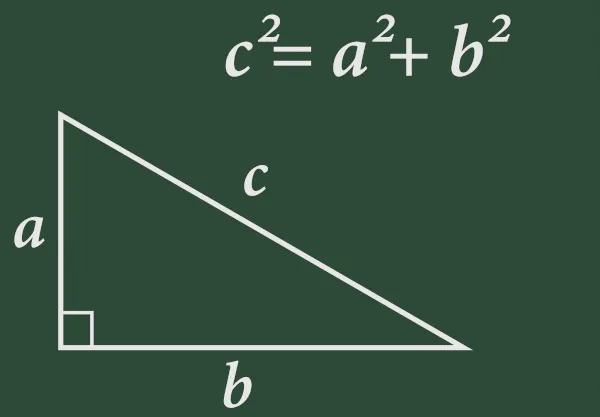
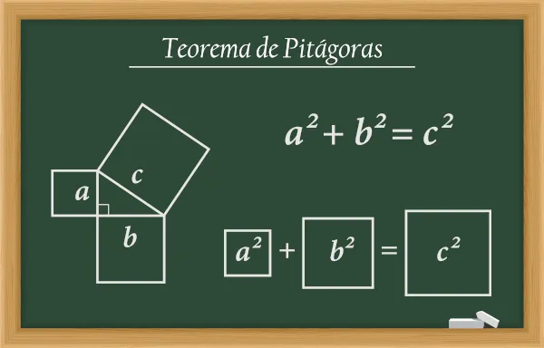

Definição
O Teorema de Pitágoras é um dos teoremas mais conhecidos e importantes da matemática, que relaciona os lados de um triângulo retângulo (um triângulo que possui um ângulo reto, ou seja, com medida de 90 graus).
Segundo o teorema, em qualquer triângulo retângulo, o quadrado da hipotenusa (o lado oposto ao ângulo reto) é igual à soma dos quadrados dos catetos (os outros dois lados que formam o ângulo reto).
Matematicamente, podemos escrever o teorema de Pitágoras como:
a² + b² = c²
Onde "a" e "b" são os catetos e "c" é a hipotenusa do triângulo retângulo.

Essa fórmula é muito utilizada em várias áreas da matemática e também em outras áreas do conhecimento, como a física e a engenharia. Com ela, podemos calcular a medida de um dos lados de um triângulo retângulo, conhecendo os valores dos outros dois lados. Ou ainda, podemos verificar se um triângulo é ou não retângulo, comparando as medidas dos seus lados.
Exemplos
Um exemplo de aplicação do Teorema de Pitágoras é o cálculo da hipotenusa de um triângulo retângulo. Suponha que as medidas dos catetos sejam a=3 e b=4. Podemos usar o Teorema de Pitágoras para calcular a hipotenusa:
h² = a² + b²
h² = 3² + 4²
h² = 9 + 16
h² = 25
h = √25
h = 5
Portanto, a hipotenusa do triângulo é 5.
Outro exemplo do Teorema de Pitágoras:
Essa prova consiste em desenhar quatro cópias do triângulo retângulo, de modo que elas formem um quadrado. As áreas dos quatro triângulos são iguais à área do quadrado, que é dada por:
A = lado²
Porém, a área do quadrado também pode ser calculada somando as áreas dos quatro triângulos e a área do quadrado interno. Como a base e a altura dos triângulos são os catetos e a hipotenusa, temos:
A = 4 x (1/2 x cateto x hipotenusa) + hipotenusa²
Igualando as duas expressões para a área do quadrado, temos:
lado² = 4 x (1/2 x cateto x hipotenusa) + hipotenusa²
lado² = 2 x cateto x hipotenusa + hipotenusa²
lado² = hipotenusa x (2 x cateto + hipotenusa)
Dividindo ambos os lados da equação por (2 x cateto + hipotenusa), temos:
lado² / (2 x cateto + hipotenusa) = hipotenusa
Que é a relação do Teorema de Pitágoras.
Desenvolvido por Pimentas LTDA.
Bruno Santos, Italo Mendes, João Pedro Lima, Kaio Amim, Matheus Mattos